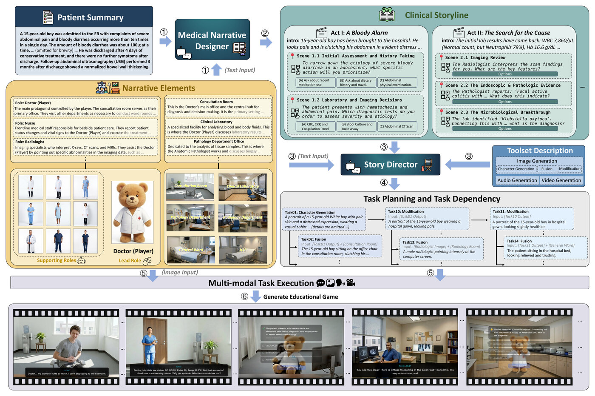
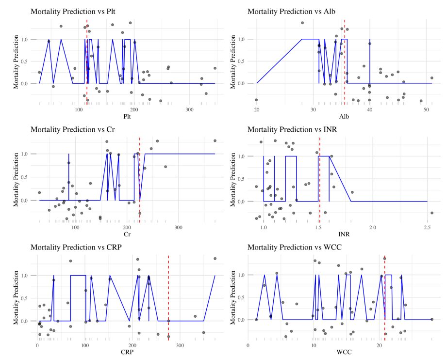
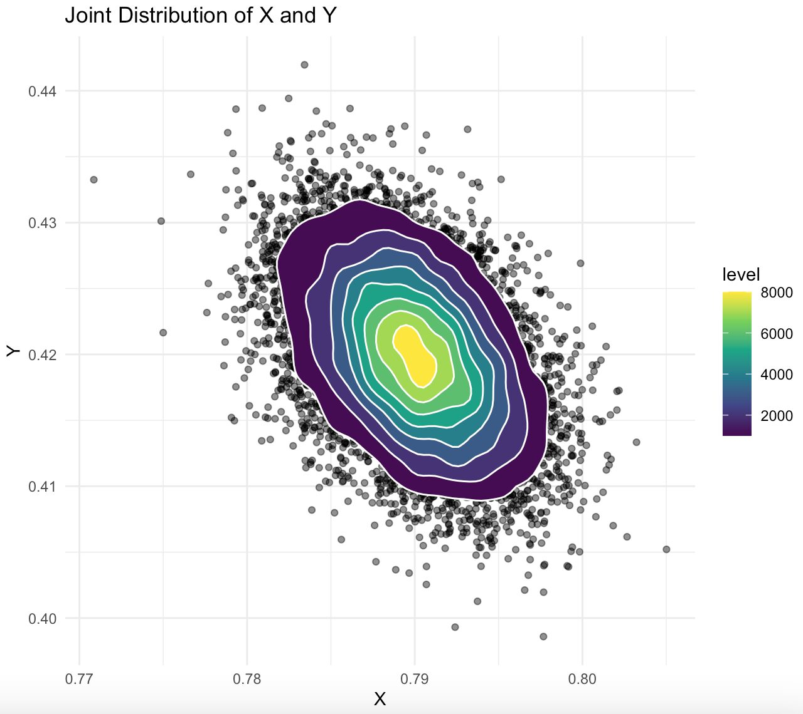
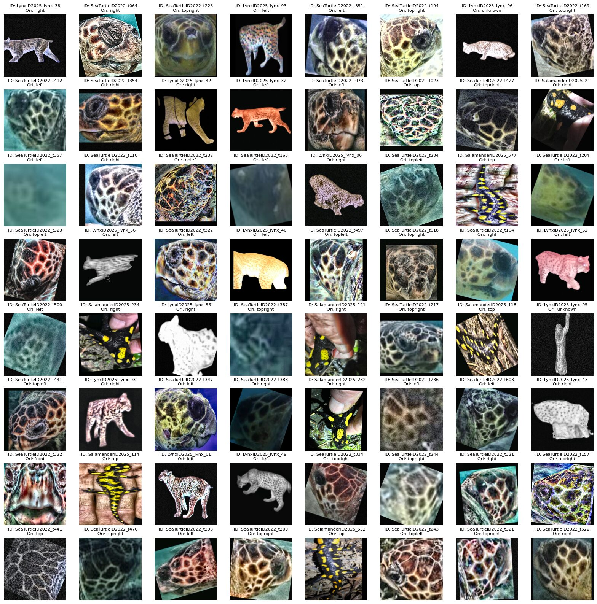
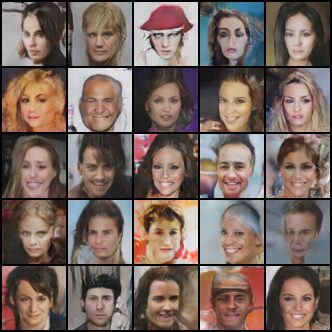
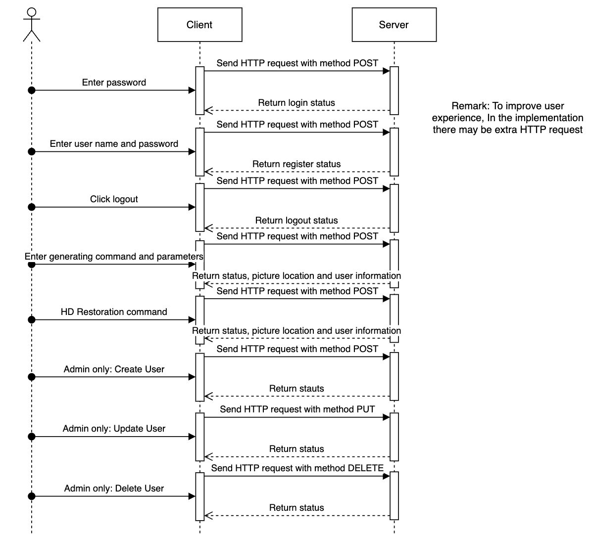

Hi there👋! I'm a master's student in Machine Learning at Carnegie Mellon University, graduating in December 2027. Before CMU I studied Statistics and Computer Science at The Chinese University of Hong Kong. My research focuses on turning generative and multimodal models into reliable, evaluable systems for complex decision making. Glad you're here.
I developed the core LLM-driven Clinical Story Tree for medical training simulators, using Pydantic-based schemas to transform expert-reviewed case reports into structured narratives that support hypothesis testing, evidence synthesis and treatment selection in adaptive doctor-patient interactions. I also engineered the dependency resolution layer for multimodal generation, coordinating visual assets, conversational speech synthesis, and audio driven video while preserving execution order and character consistency across scenes. Preprint: arXiv:2607.21570.

This research provided an epidemiological study. Statistical association between the response variables and the predictors were studied, we also produced a practical scoring system to predict mortality with a simple calculation step, good predictive power, and intuitive interpretation.


This is an ongoing theoretical research project aiming to establish the foundational properties of a novel directional statistic, Δq = q(X,Y) − q(Y,X), derived from Chatterjee's rank correlation. We aim to rigorously analyze its consistency, key invariance properties, and asymptotic behavior (LLN/CLT) under conditions of mild dependence. Stay tuned to see what we discover!
A framework that compiles case-report-derived patient summaries into executable, decision-based clinical simulations, with a layered evaluation protocol that separates structural executability from clinical and educational quality.
This project tackled open‑set wildlife individual re‑identification. I led data‑split design, built an data augmentation pipeline, handled class imbalance, and fine‑tuned pre-trained MegaDescriptor with cross‑entropy and triplet losses. A broad grid search plus species-specific thresholding delivered 110%-140% gains in GEO_MEAN. Selected as the best project in SEEM2460 and placed in the top 15% of the Kaggle AnimalCLEF25 leaderboard.

This project built realistic face generators with VAE, GAN, and a hybrid approach. I implemented the pipelines and built a VAE–GAN hybrid optimized with a composite objective using coordinated encoder/decoder/ discriminator updates and carefully tuned hyperparameters; evaluated with Inception Score and Laplacian variance, then investigated latent-space structure for facial-feature interpolation. The hybrid reached 4.42× the Laplacian sharpness of the VAE and converged in half the epochs of the GAN.

This project delivered an end‑to‑end image generation web app. I co‑designed the architecture, built Flask REST APIs and a React UI, added authentication and an SQLite data layer, and wrote integration tests. The system supports SDXL generation and Real-ESRGAN upscaling, and the Pytest, Jest and Cypress suites cover authentication, database operations and critical user journeys at 90% codebase coverage.

• Designed 18 alpha factors across momentum, liquidity, order-flow imbalance, volatility and behavioural signals, using daily bars, Level-1 quotes and Level-2 order book data across the full A-share universe.
• Reached Sharpe 2.1 and 37% annual excess return after style and industry neutralization, by stratifying signals on market capitalization, correcting behavioural biases and flipping signals under high-volatility and high-turnover regimes.
• Refactored the Level-2 pipeline with vectorized NumPy, rolling-window aggregation and multiprocessing, cutting end-to-end computation from about 10 minutes to under 1 minute across roughly 5,000 stocks.
• Designed the deduplication strategy for migrating 350k ordinary and 35k VIP member records alongside transaction and invoice data, authoring 50+ merge rules agreed across client and Deloitte teams.
• Built SQL validation and key-metric reporting that reduced data integrity issues by 98%, and engineered Azure Data Factory pipelines for MongoDB and Cosmos DB migration.
• Received a full-time return offer.
Step into my gallery! I’m drawn to the delicacy of Chinese ink and the luminous energy of oil—two mediums that balance quiet and color. I’m excited to share some of my pieces with you.